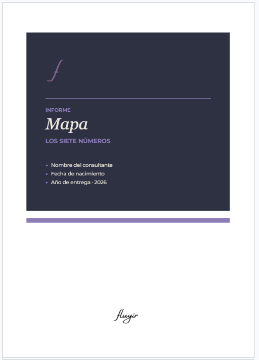
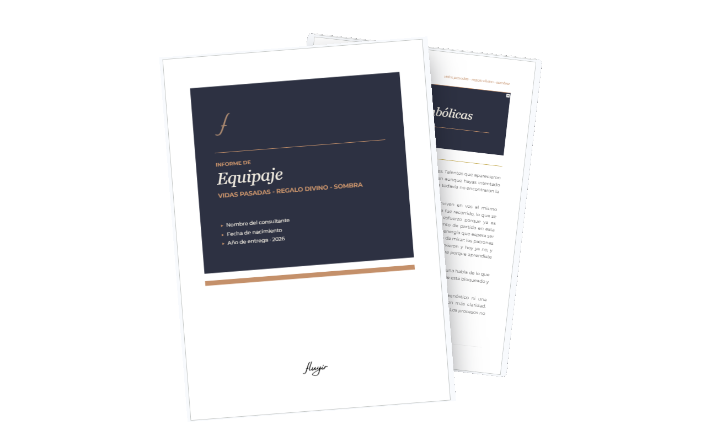
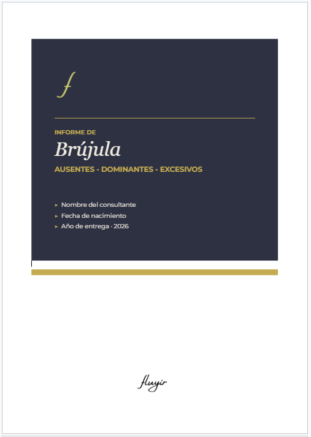
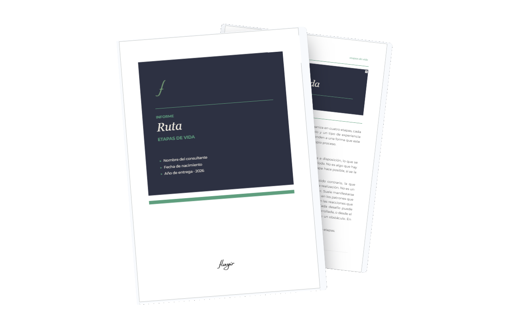
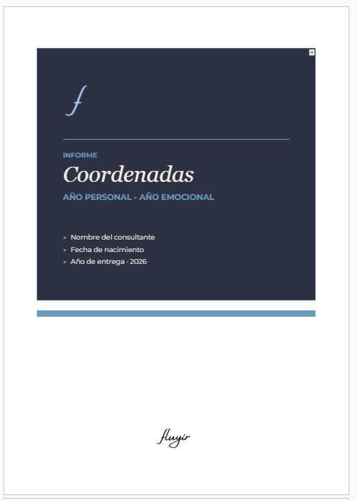

Numerología · Escritura · Libros
Un espacio de autoconocimiento que no le escapa a la sombra. Se mira lo que potencia y lo que incomoda por igual, con la misma honestidad. Sin glitter.
Informes escritos y personalizados para reconocerte con más claridad y menos autojuicio.
Qué es un informe Fluyir
Cada informe se arma con tu nombre completo y tu fecha de nacimiento. A partir de esos datos, la numerología funciona como un lenguaje para nombrar lo que se siente pero todavía no se entiende: los patrones que se repiten, las cualidades que tenés pero no usás, las partes de vos que aprendiste a esconder porque en algún momento no fue seguro mostrarlas.
Es información, no un veredicto. Un lugar al que volver en distintos momentos, porque lo que encontrás ahí puede no cambiar, pero la forma en que lo entendés y lo mirás sí.
Se entregan en formato digital. El proceso de leerlos, de volver a ellos, de dejar que decanten, es tuyo: a tu ritmo, en tu tiempo.
atravesar un momento oscuro,
no te convierte en una persona oscura.

Cinco lecturas
Cinco formas distintas de mirarte, complementarias entre sí.

Siete números con ubicaciones específicas que muestran tu energía cotidiana, tus aprendizajes, tu esencia, tu propósito. Es el informe más abarcativo, y por eso es la base de tu experiencia.
Quiero este informe
Tres dimensiones que conviven en vos al mismo tiempo: la memoria que ya traés, el don que está disponible aunque todavía no lo reconozcas del todo, y lo que tapaste porque en algún momento fue mejor no mostrarlo. Es el informe que va directo a lo que más cuesta mirar.
Quiero este informe
La frecuencia con la que aparece cada número en tu nombre revela tres categorías: lo que todavía no se activó, lo que ya es un recurso fuerte en vos, y lo que está tan presente que puede no estar equilibrado. Las tres son información sobre cómo te movés.
Quiero este informe
La vida se organiza en cuatro etapas, cada una con su propia energía, su aprendizaje y su tipo de experiencia. Este informe las traduce en información concreta: qué se abre en cada una y qué desafío convive con esa apertura.
Quiero este informe
Dos capas del tiempo que se complementan: la dirección del ciclo que estás atravesando y el estado interno desde el que lo habitás. Una lectura para entender qué está activo en este momento puntual.
Quiero este informeCómo pedirlo
Revisás las cinco opciones y elegís la que más resuena con lo que querés mirar. Podés empezar por cualquiera.
Dejás tu nombre completo tal como aparece en tu documento, tu fecha de nacimiento y tu mail. Una vez que me llegue, coordinamos el pago por mail, y con eso armo tu informe.
En un plazo de 48 horas, recibís tu informe personalizado por mail, en formato digital. El proceso de leerlo es tuyo, a tu ritmo.
Gracias. Recibí tus datos.
Te voy a escribir por mail para coordinar el pago. Una vez confirmado, en 48 horas tenés tu informe personalizado, en formato digital.
el tiempo y su perspectiva, traen entendimiento.
Sobre mí
Hace tiempo que vengo mirando lo que incomoda. Desarmando lo que aprendí a mostrar, lo que guardé sin saber bien por qué, lo que repetía en automático sin preguntarme qué buscaba ahí. No es un proceso prolijo ni lineal: más bien una montaña rusa.
En el camino fui incorporando herramientas, que hoy se convirtieron en la base de Fluyir. La numerología me dio un mapa donde ubicar lo que sentía pero no podía nombrar. La escritura me dio el lugar para sacarlo de adentro y mirarlo de frente. Y los libros me mostraron que había otros transitando sentires similares. Ahí aprendí que la sombra, lo que incomoda o lo que cuesta mirar, no está separado de lo que entendés de vos, del autoconocimiento. Las dos cosas son parte del mismo proceso. El combo es completo, o no es.
No hablo desde afuera. Lo transito yo también, todos los días.